Iron Monger (Obadiah Stane) (Terre-616)
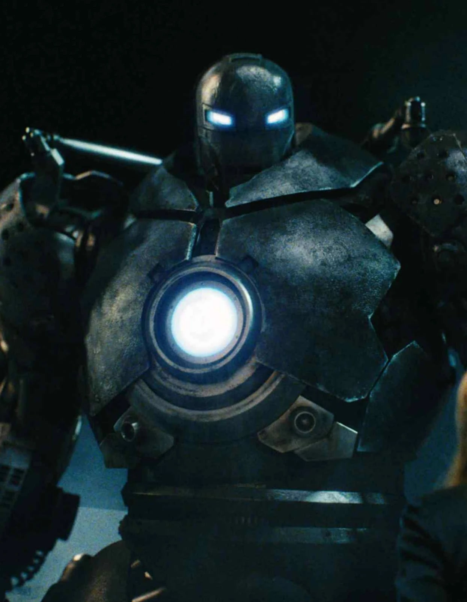
Origines :
Obadiah Stane a grandi dans la misère, son père étant accro aux jeux d'argent et accessoirement alcoolique.
Un jour, peu après la mort de sa mère (dans des circonstances inconnues), Obadiah vit son père jouer à la roulette russe, et se tirer une balle dans la tête dans un énième coup de malchance.
Ce traumatisme psychologique lui fit perdre tous ses cheveux et le rendit chauve, ce qui le marquera toute sa vie.
Dès lors, Obadiah devint un manipulateur sans scrupules, étudiant ses adversaires afin d'en déceler les faiblesses et les exploiter.
Passionné d'échecs, il menait sa vie avec la même logique méthodique que pendant ses parties.
De plus, il était convaincu d'avoir le pouvoir de la manipulation psychologique : par exemple, lors d'une partie d'échecs contre un enfant du même niveau que lui, il a tué son chien afin que son adversaire soit distrait et ainsi remporter la partie.
Devenu adulte et un riche financier, Obadiah tenta d'acquérir Stark Entreprises, la société industrielle propriété d'Howard Stark, mais sans succès.
Il retentera alors lorsque le fils d'Howard, Tony Stark (alias Iron Man), en était devenu le propriétaire.
Stane chargea ses agents, les Chessmen, d'attaquer Stark International et d'agresser Jim Rhodes, le confident de Tony.
Il fit également passer Indries Moomji pour la maîtresse de Stark, à l'insu de ce dernier qui savait qu'elle était en réalité la Reine des Chessmen.
Parallèlement, Stane et ses associés complotèrent pour empêcher Stark International de conclure divers accords commerciaux.
Stark finit par découvrir que Stane était le cerveau derrière ces attaques, mais fut incapable de le confronter, replongeant dans son alcoolisme.
Avec l'aide du SHIELD, Stane réussit finalement à racheter Stark International, qu'il rebaptisa en Stane International.
Stark, ayant replongé dans l'alcool, confia son armure à Rhodes et disparut, devenant un vagabond sans domicile fixe.
Rhodes devint alors le nouvel Iron Man, ignorant les demandes de Stane de lui rendre l'armure.
Stane poursuivit la fabrication et la fourniture de munitions et d'armes au SHIELD ainsi qu'à toutes organisations prêtes à payer.
Mais Tony, dans sa fuite, laissa derrière lui des notes et des informations sur l'armure d'Iron Man.
Ces notes, qui étaient incomplètes, étaient très difficiles à analyser sans la présence de Stark.
Stane chargea néanmoins une équipe de scientifiques de les étudier et, à partir de ces éléments, créèrent l'armure Iron Monger MK I qui, selon Stane, était « bien supérieure à l'armure d'Iron Man de Stark ».
Il envisagea même de les vendre au plus offrant ou d'en constituer une armée pour « conquérir n'importe quel pays ».
Obadiah s'allia ensuite à Madame Masque, lui promettant vengeance contre Iron Man en échange de son aide.
Il lui raconta son histoire et la manipula pour qu'elle devienne sa maîtresse, la droguant à son insu et l'emprisonnant dans un tube.
Il fit ensuite kidnapper Bethany Cabe, l'ancienne flamme de Tony, ainsi que plusieurs de ses amis et connaissances afin de prendre l'ascendant sur lui et le forcer à sortir de sa cachette.
Par pure vengeance, il fit un lavage de cerveau à Cabe pour qu'elle tombe amoureuse de lui, et lui présenta son nouveau projet : l'Iron Monger.
Stark, ayant eu vent de toute cetta affaire, confectionna une nouvelle armure d'Iron Man : l'armure Silver Centurion, également appelée l'armure Mark 7, et fonda une nouvelle entreprise informatique florissante : Circuits Maximus.
Ayant appris le rétablissement de son rival, Stane, fou de rage, décida de reprendre ses attaques contre Stark.
Ce dernier l'affronta sur le terrain de Stane International, et Obadiah revêtit l'Iron Monger pour affronter son rival en personne.
L'Iron Monger était plus puissante que la précédente armure d'Iron Man, mais moins que le Silver Centurion.
Dominé, Obadiah menaça Stark de faire assassiner ses amis, mais Stark neutralisa facilement tous les pièges mortels.
Poussé à bout, Stane sortit son dernier atout : le bébé de la femme que Stark avait accompagné pendant son séjour à la rue.
Il ordonna à Stark de retirer son casque, sous peine d'écraser l'enfant entre ses mains.
Mais Tony, ayant détecté des failles dans les systèmes de l'armure durant le combat, en déduisit que Stane n'avait pas l'expérience nécessaire pour la piloter sans l'aide d'un ordinateur externe.
Il utilisa les répulseurs de son armure pour détruire le bâtiment voisin, abritant l'ordinateur, ce qui immobilisa immédiatement l'Iron Monger et la fit s'écraser au sol tandis que Stark fondit sur le bébé.
Stane retire alors son casque et fit face à son ennemi. Lorsque Tony lui annonça que tout était terminé, Stane rétorqua que la véritable victoire résidait dans le plaisir de voir son adversaire souffrir, et jura qu'il ne laisserait pas ce plaisir à Stark.
Il porta ensuite la main à sa tempe et, à l'aide de son répulseur, se tira une balle dans la tête, comme l'avait fait son père avant lui.
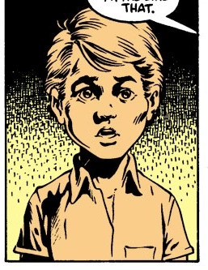
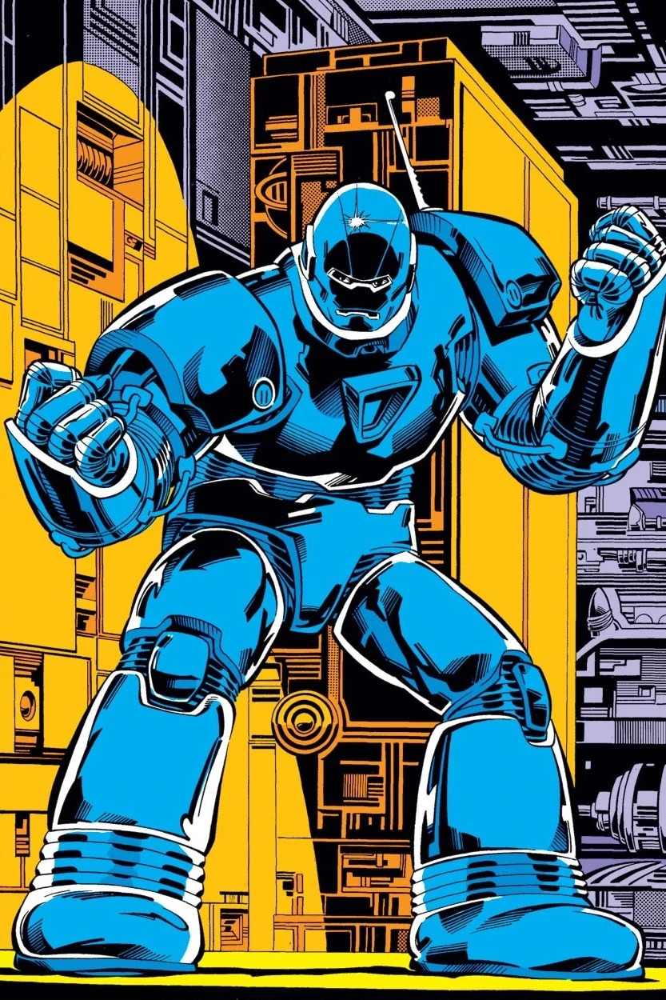
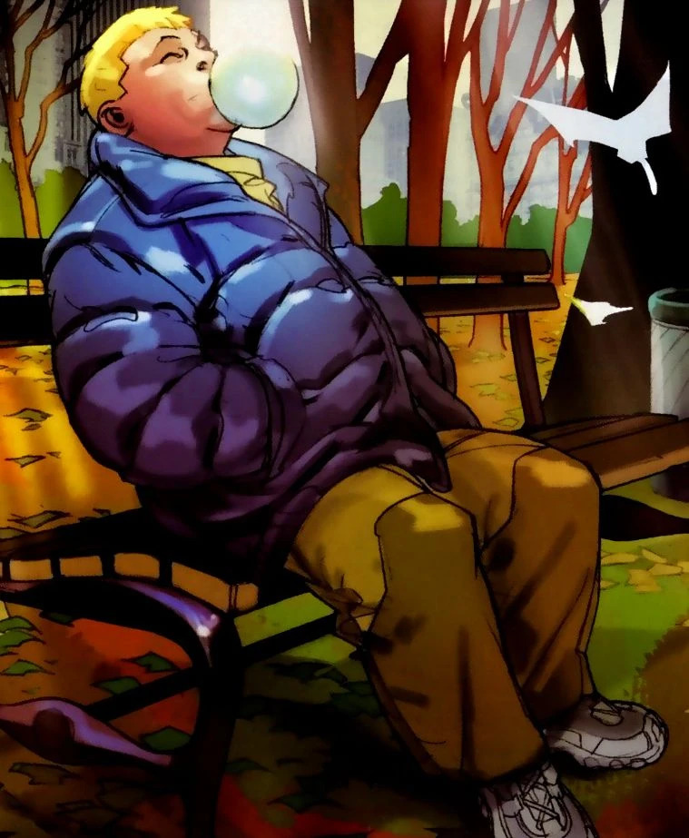
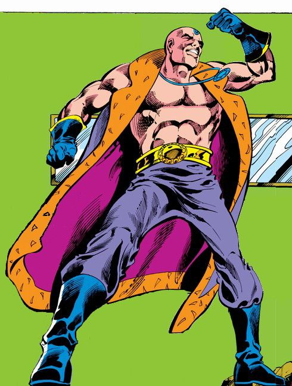
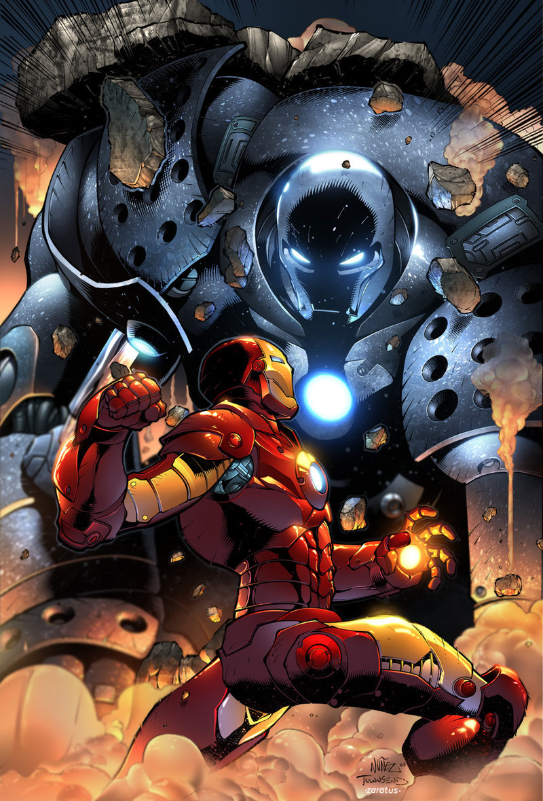
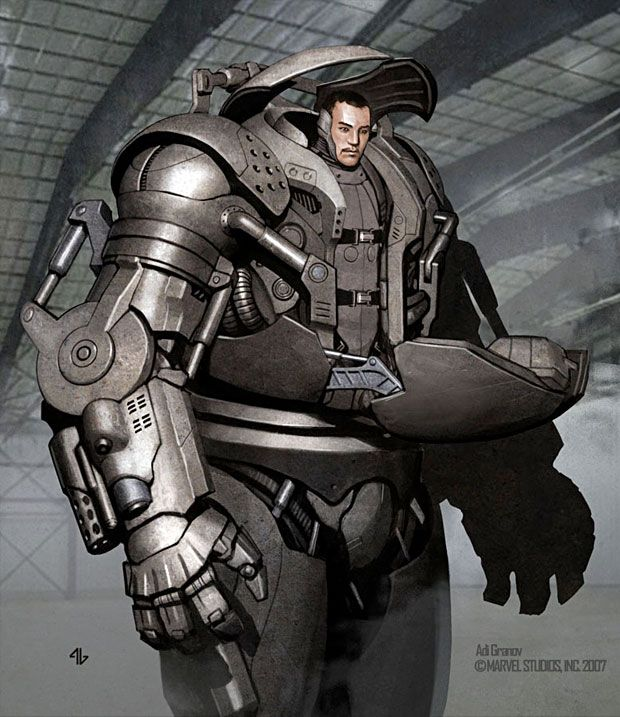
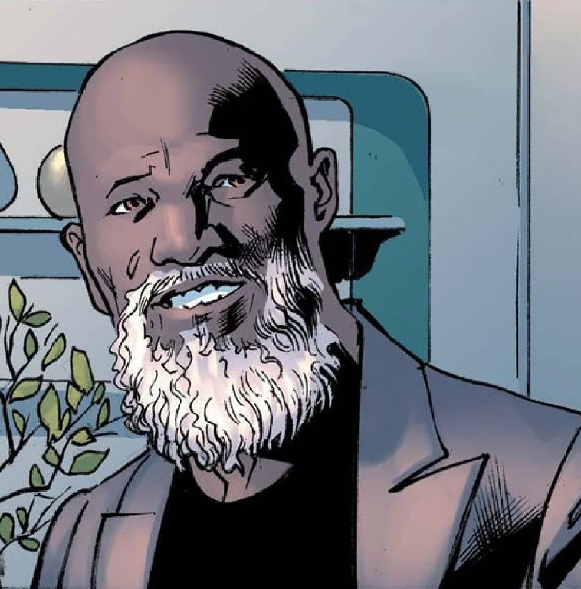
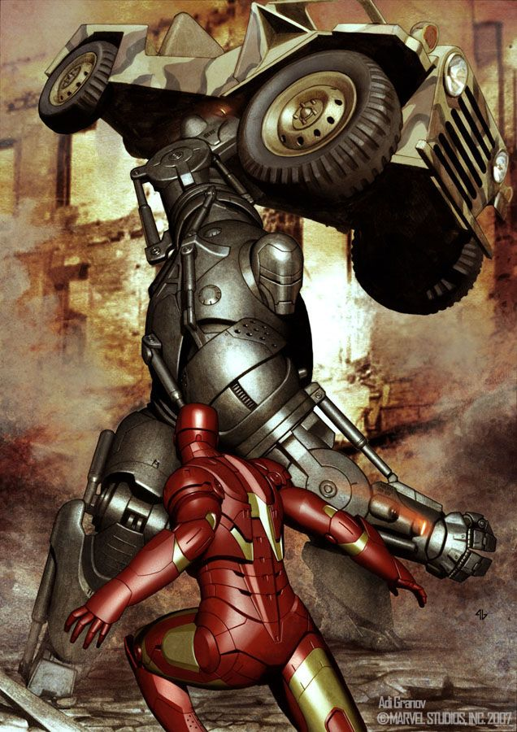
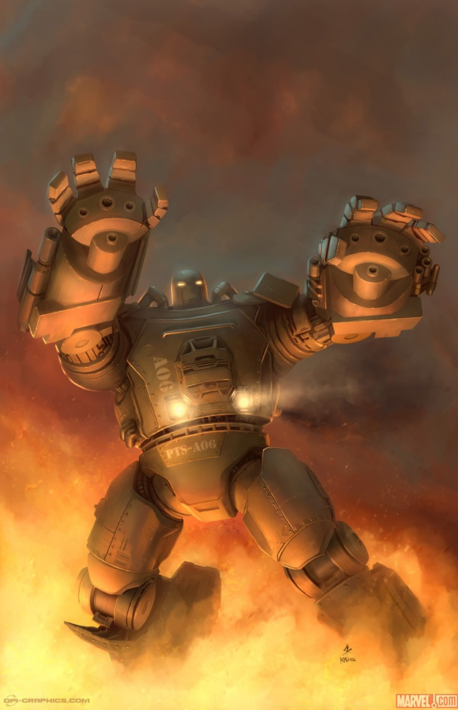
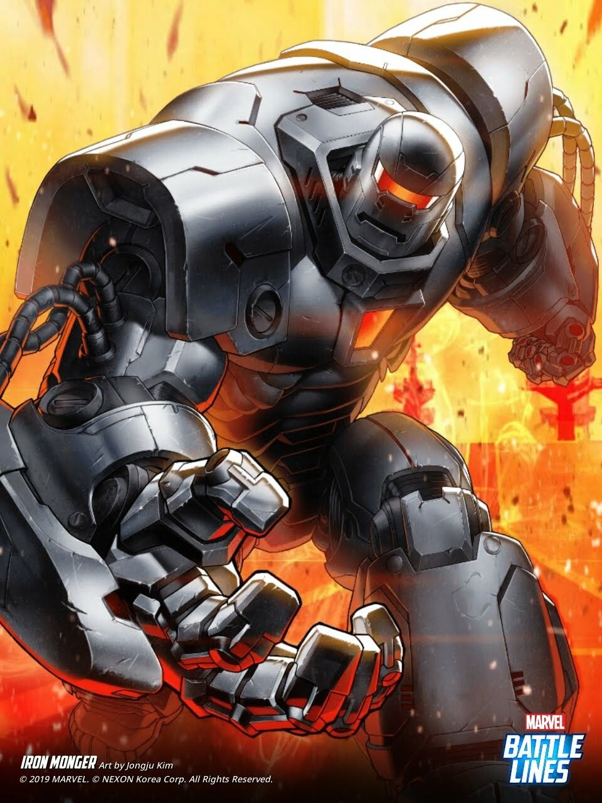
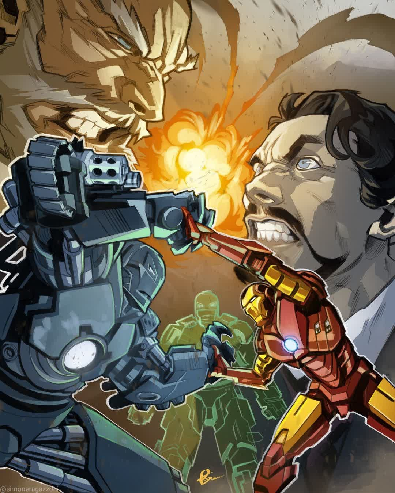
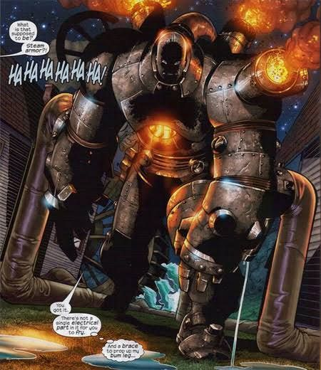
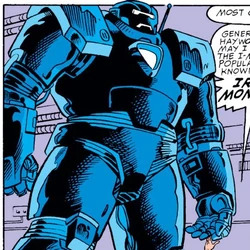
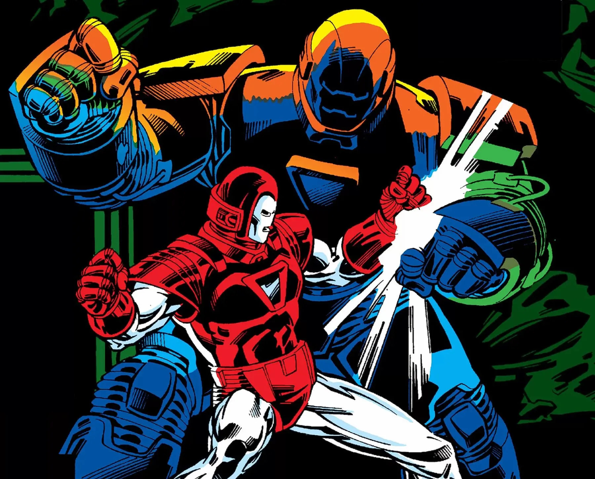
.jpg)
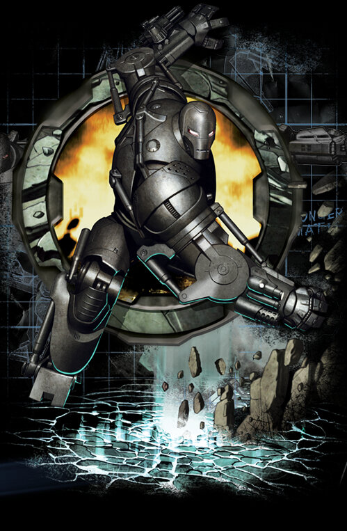
.jpg)
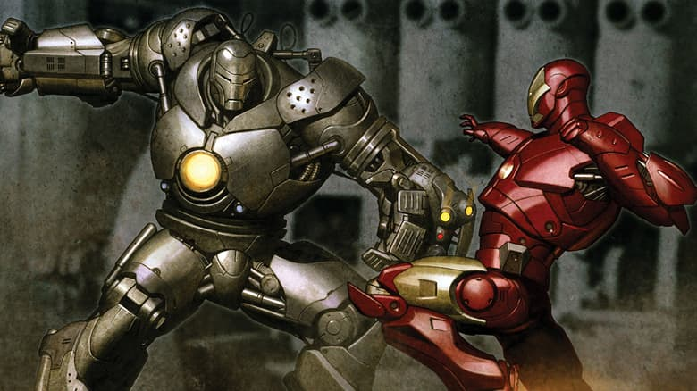
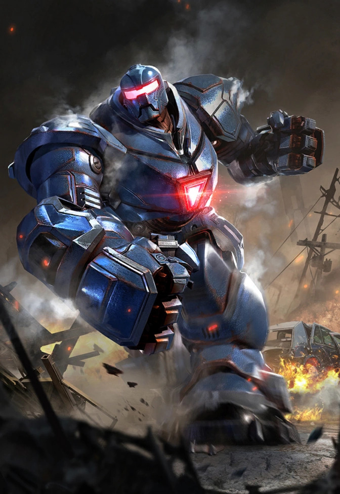
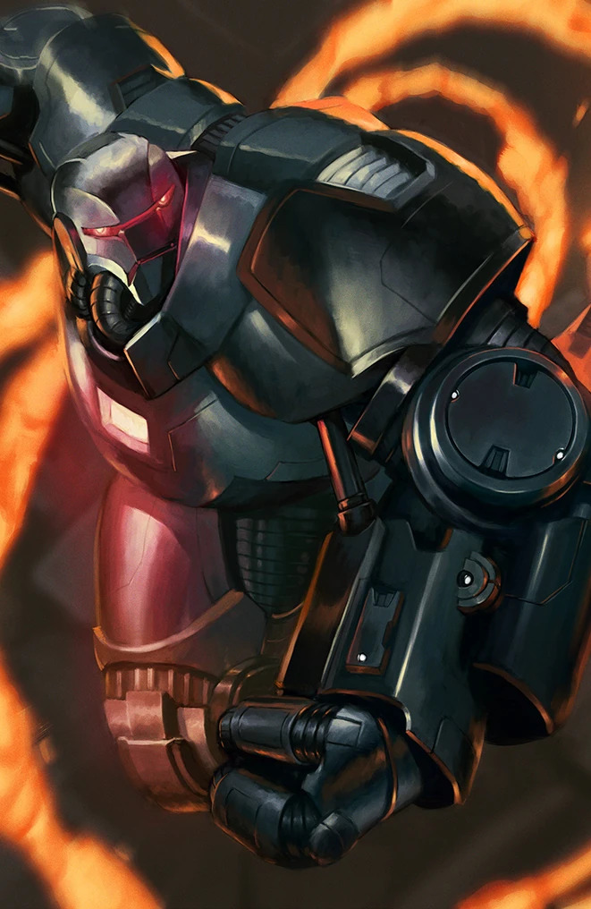
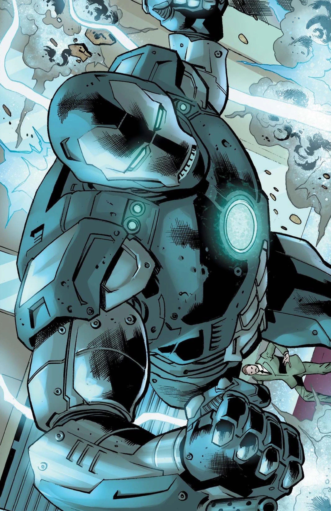
.jpg)
Capacités :
Obadiah Stane ne possède aucun super-pouvoirs.
En revanche, c'est un génie intellectuel et un expert en manipulations psychologiques ainsi qu'un excellent homme d'affaires.
Avec son armure d'Iron Monger, il possède une grande variété de facultés surhumaines, notamment une force lui permettant de soulever environ 50 tonnes,
Il est également capable de voler dans les airs à grande vitesse grâce aux répulseurs intégrés aux bottes de l'armure, ainsi que de projeter des rayons de particules (ou rayons répulseurs).

Apparence :
L'armure Iron Monger est une armure de combat géante, conçue comme une version plus massive et intimidante de l'armure d'Iron Man.
Son apparence peut varier légèrement en fonction des dessinateurs, mais généralement, elle est largement similaire aux premières armures d'Iron Man, avec des épaules larges et carrées, lui donnant une allure de char d'assaut humanoïde, avec un large torse composé de plaques d'acier superposées, et des membres volumineux, notamment ses avant-bras et ses jambes.
Elle est généralement de couleur bleu métallique, avec des touches de gris / argentés.
Son casque est un élément reconnaissable de l'armure, avec un visage anguleux et agressif, une fente oculaire étroite et une mâchoire proéminente.
Au centre de son plastron se trouve un réacteur lumineux, similaire à celui d'Iron Man en plus grand.